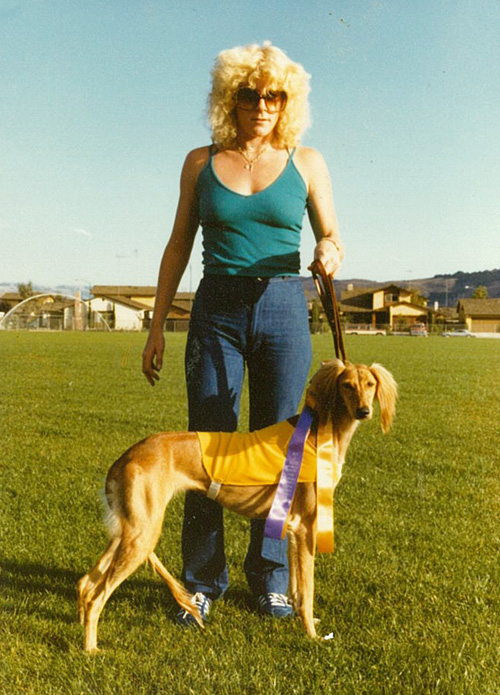
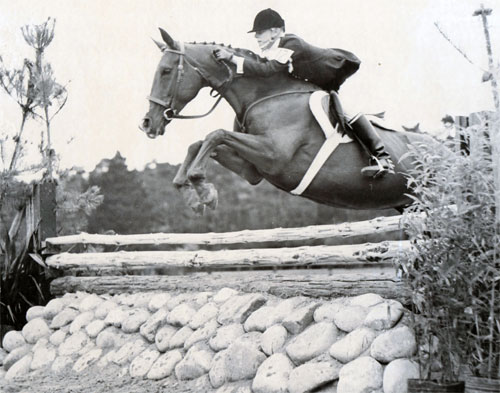

Welcome to my site. I am a Dog Whisperer. I have worked with other animals but at this time I am concentrating on dogs. I live in Roseville, Ca. which is near Sacramento. I have been working with animals for 45 years.
Here is a little history about me. I grew up in Carmel, Ca. My father Dr. V.J. Marasco is a veterinarian who is retired now. Carmel-by the-sea Veterinary Hospital was the name of his practice.
All of my life I have been around animals either working for my father assisting him in treating them or working on my own with animals who have behavioral problems. I have been given a gift to understand and connect with animals.
I owned a saluki (dog) her name was Fazia who at the age of 4 earned her lure courser of merit certificate. The breeders I bought her from not one of their dogs had ever won this in the 25 years of breeding. I accomplished this in one year of racing her. She was fourth in the nation with the American Sighthound Field Association that year. Granted she was fast but lure coursing is a race in an open field and is a zig zag course and most dogs try to cut across the course to catch the lure which would disqualify them so there is a lot of time and training put into this.

At the age of 15 I was an accomplished equestrian rider. With very little training I took a 5 year old mare her name was Sure Enough and after one year of working with her I won the Pebble Beach Classic Horse Show this was only my 3rd show I had been in. This event brings the elite riders from all over to participate in this event. It consists of 5 days of competition and out of a group of 25 entered I won the event. Generally the training would take many years for the common competitor to compete on this level let alone win it.

As a side note I graduated from Law School and earned my doctorate in Law.
I realized my passion and purpose in life is to work with animals especially ones with behavior problems. Behavioral problems stem from people not understanding the dogs role and purpose that would fulfill them and bring harmony in the pack (family). This is explained further under my philosophies.
I have decided to start a web page to reach more whom I can help. My site is a work in progress so please come back as I will be adding more photos, testimonials and videos